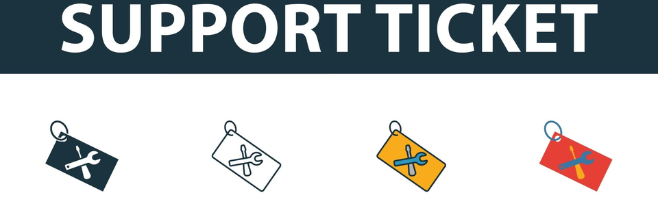

About
I’m a Business Systems Analyst and Business Intelligence/Data Analyst focused on operational reporting, KPI development,
and data validation. I build measurement systems that turn business questions into clear metric definitions, reliable SQL logic,
and dashboards stakeholders can trust.
My work emphasizes reporting foundations: defining KPIs, documenting assumptions, building reusable SQL views, and validating that
metrics accurately reflect real-world performance. I partner cross-functionally to clarify requirements and deliver reporting that
improves visibility, accountability, and decision-making.
I’m especially interested in BI and operational analytics roles where data quality and consistent metrics matter—supporting efficiency,
SLA monitoring, and measurable outcomes.
- KPI Definitions: standardized metrics, assumptions, and calculation rules
- SQL Reporting Layer: reusable views/CTEs/window functions for consistent reporting
- Validation: QA checks to ensure metrics align with operational reality
- Insights: performance trends and recommendations tied to business outcomes
Technical Skills
Core Strengths: KPI Design & Metric Definition, Operational Analytics, Data Validation/QA, Reporting Logic, Stakeholder Reporting
SQL: T-SQL, MySQL, Window Functions, CTEs, Joins, Aggregations, Subqueries, KPI Calculations, Query Optimization
Data Modeling: Relational Database Design, Schema Design, Data Modeling
Python: pandas (EDA), Matplotlib
Cloud: Google Cloud (VM)
Projects
TARI – Talent Acquisition Reporting & Insights
Interactive Dashboard Preview
Designed and implemented an end-to-end SQL-based performance measurement system to analyze recruitment funnel performance,
stage conversion rates, and time-to-fill metrics.
Built a structured reporting layer using CTEs, window functions, and reusable KPI views to translate raw candidate-stage data
into executive-ready dashboards for performance monitoring and bottleneck analysis.
- KPI Framework: Funnel conversion, stage drop-off, time-in-stage, and offer rate metrics
- Data Architecture: Relational schema design with structured stage tracking
- Operational Insight: Identified bottlenecks in mid-funnel progression and stage-level delays
- Recommendation: Optimize recruiter load balancing and reduce stage lag through SLA monitoring
What I Built: Schema design + SQL reporting layer + KPI definitions + interactive dashboard visualization.
Explore Project:

Support Engagement & KPI Reporting
Designed SQL-based KPI reporting logic to evaluate agent performance, response time metrics, and operational workload distribution.
Built structured queries using window functions, CTEs, and aggregations to measure first response time, ticket volume, and engagement trends across agents.
Focused on translating raw ticket-level data into performance indicators that support staffing decisions, SLA monitoring, and operational efficiency improvements.
- Key Insight: Identified response time bottlenecks and uneven ticket allocation across support agents.
- Recommendation: Proposed data-driven workload balancing and SLA tracking improvements.
What I built: KPI definitions + SQL reporting layer (CTEs/window functions) for response-time and workload metrics, with validation checks.
Explore Repository

SQL Social Media App (Relational Analytics Project)
Designed and implemented a relational database schema for a simulated social media platform to analyze user engagement and activity patterns.
Generated structured sample data and developed SQL queries to calculate engagement metrics and behavioral trends.
This project demonstrates relational modeling, query optimization, and translating business questions into measurable SQL-based insights.
- Key Insight: Used SQL to quantify engagement patterns and identify top activity drivers.
- Recommendation: Proposed data-driven actions to improve retention and engagement based on usage trends.
What I built: relational schema + SQL queries to measure engagement (activity, interactions, usage trends) and translate results into product recommendations.
Team Project: collaborated with Steven Zhu.
My contributions: schema design, KPI/metric queries, and insight/recommendation write-up.
Explore Repository

Super Store Sales Performance Analysis
Performed exploratory and profitability analysis on retail sales data to identify revenue drivers and margin leakage.
Analyzed discount impact, regional performance, and product-level profitability to support pricing and operational recommendations.
Insights were translated into visual summaries to highlight actionable areas for performance improvement.
- Key Insight: Identified profit leakage tied to discounting and select product categories/regions.
- Recommendation: Refine discount strategy and prioritize higher-margin segments.
Skills and Concepts Demonstrated: Python, pandas, Matplotlib, Data Cleaning, Data Exploration, Data Analysis, Business Insights, Data Visualization
Explore Repository
Contact